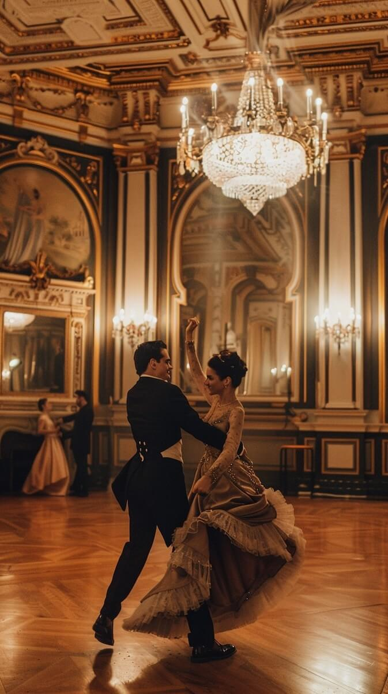

Waltz
History
The waltz is one of the oldest and most iconic Ballroom dances. The origins date back to the late 18th century in Austria and Germany.
Initially, it was considered scandalous due to its close hold and the spinning movements that set it apart from the more formal dances of the time.
The name "waltz" comes from the German word "walzen", meaning "to turn" or "to roll,". It gained popularity in Vienna during the 19th century, especially in aristocratic circles,
and by the mid-1800s, it had spread across Europe and to the United States, evolving into various styles such as the Viennese waltz and the slower, more graceful modern waltz we dance today.
Known for its elegance, the waltz remains a symbol of timeless beauty, with its flowing, circular steps and steady 3/4 rhythm captivating dancers for centuries.
Moves
Box turn
In the basic waltz box step, the man begins with the left foot, and the woman starts with the right. The pattern is:
1. Step forward with the left foot (man) / Step backward with the right foot (woman).
2. Step to the side with the right foot (man) / Step to the side with the left foot (woman).
3. Step together, bringing feet together with the left foot (man) / Step together, bringing feet together with the right foot (woman).
Watch the video to show a demo.
Waltz Box Turn
Princess turn
Man's Role: He will guide the woman with their right hand raised (either at shoulder or head height), leading her into the turn.
The leader will step forward (if starting from a box step position) and then pivot slightly to the side, maintaining a strong, guiding hand to support the woman's turn.
Woman's Role: The womans steps into the turn by rotating around the leader’s raised hand. The follower begins by stepping to the side (typically with the left foot),
and as she turns, she continues rotating, keeping her feet close together. The rotation is smooth and continuous, with the follower turning 180 degrees or so, completing the turn with a graceful finish.
Watch the video to show a demo.
Waltz Princess Turn
Traveling Box
Man's Role:
1. Step forward with the left foot.
2. Step sideways to the right with the right foot.
3. Close the left foot to the right foot, completing the first part of the box.
4. Now, step sideways to the left with the left foot, followed by stepping backward with the right foot.
5. Finally, close the left foot to the right foot to complete the full box pattern.
Woman's Role:
1. Step backward with the right foot (mirroring the man's forward movement).
2. Step sideways to the left with the left foot.
3. Close the right foot to the left foot, completing the first part of the box.
4. Now, step sideways to the right with the right foot, followed by stepping forward with the left foot.
5. Finally, close the right foot to the left foot to complete the pattern.
In this move, they are not just moving in place—they are traveling in a linear direction across the floor. This step is typically done in a straight line or diagonal.
Watch the video to show a demo.
Waltz Traveling Box